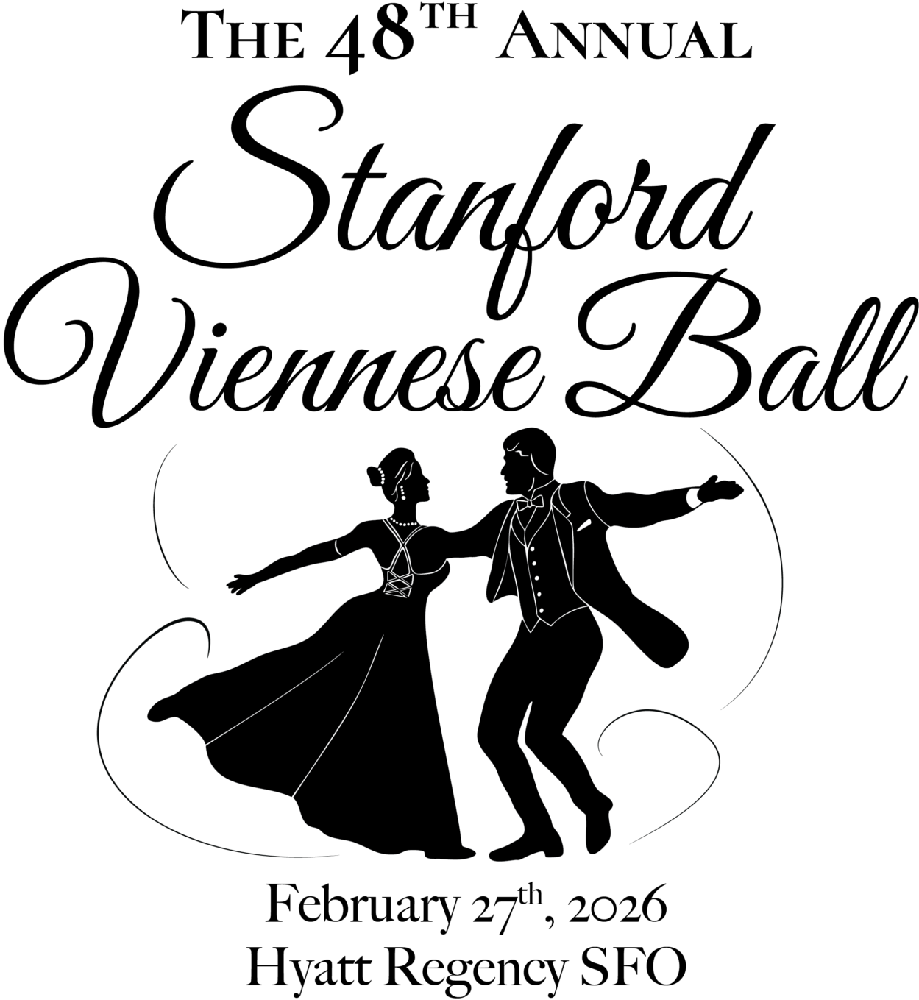

Join us at the 48th annual Stanford Viennese Ball on Friday, February 27, 2026, at the Hyatt Regency SFO in Burlingame!

Tickets
 Add to iPhone
Add to Google Calendar
Add to iPhone
Add to Google Calendar
Let us bring you to the city of Vienna for an evening, where debutant(e)s in sharp tuxedos and flowing white gowns leap across the dance floor, where you waltz to live music and marvel at the soaring aerials of swing dance performers. Dance all night, eat merrily, and make endless memories with friends. Experience a centuries-old Austrian tradition—all without leaving the Bay Area.
The Stanford Viennese Ball is run by the Viennese Ball Steering Committee, a volunteer-based student group. We’re really grateful for everything this fantastic team has done so far and we can’t wait to get this event running again! Please feel free to use the website to learn about our fall and winter quarter events, Fall Ball and Little Big Dance, the free social dance lessons that we offer before Viennese Ball, social dance etiquette, and other details like venue, transportation, and event schedule as they are updated.
Purchase tickets here: https://linktr.ee/svball
Follow us on social media!